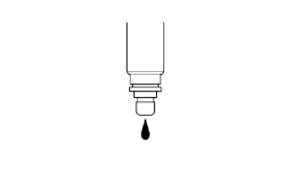

DTC P0171/25 リーン異常 (Bank1) |
DTC P0172/26 リッチ異常 (Bank1) |
| DTC No. | DTC検出条件
| 点検部位 |
|---|---|---|
| P0171/25 |
|
|
| P0172/26 |
|
|
| 手順1 | エミッションコントロールシステム点検 |
参照)
|
| ||||
| OK | |
| 手順2 | フューエル インジェクタASSY点検 |
抵抗点検
SST(トヨタエレクトリカルテスター)を使用して、インジェクタの端子間の抵抗を測定する。
 |
噴射量点検
新品のフューエルチューブを用意し、コネクタのみを取りはずす。
SST(インジェクションメジャーリングツールセット)およびフューエルﾙチューブコネクタをフューエルパイプ(車両側)に接続する。
 |
インジェクタにOリングを取り付ける。
SSTをインジェクタに取り付ける。
インジェクタをメスシリンダにセットする。
フューエルポンプを作動させる。
 |
インジェクタにSSTを接続する。
SST(EFIインスペクションワイヤ H)をバッテリに接続し、燃料噴射(15秒間)を2-3回行い平均値を算出する。
| 噴射量 | 各インジェクタの差 |
|---|---|
| 47-58ml | 11ml以下 |
漏れ点検
|  |
上記の状態でSST(EFIインスペクションワイヤ H)をバッテリから外したとき、インジェクタから漏れがないことを確認する。
|
| ||||
| OK | |
| 手順3 | E.F.I. ウォータテンパラチャ センサ単体点検 |
抵抗点検
 |
SST(トヨタエレクトリカルテスター)を使用して、端子間の抵抗を測定する。
| 端子 | 条件 | 基準値 |
|---|---|---|
| 1←→3(E.F.I用) | 約20°C時 | 2-3kΩ |
| 1←→3(E.F.I用) | 約80°C時 | 0.2-0.4kΩ |
| 2←→ボデー(メーター用) | 約50°C時 | 160-240Ω |
| 2←→ボデー(メーター用) | 約120°C時 | 17-22Ω |
|
| ||||
| OK | |
| 手順4 | イグニッションシステム点検 |
火花点検
シリンダーヘッドカバーNo.2取りはずす。
イグニッションコイルASSYを取りはずす。
スパークプラグを取りはずす。
イグニッションコイルASSYにスパークプラグを取り付けてコネクタを接続する。
フューエルインジェクタASSYのコネクタを全て切り離す。
スパークプラグをアースする。
クランキングしたとき、ハバナが飛ぶことを確認する。
|
| ||||
| OK | |
| 手順5 | 燃圧点検 |
点検準備
 |
新品のフューエルチューブを用意し、コネクタのみを取りはずす。
燃料流出防止作業(要領は参照)
フューエルチューブクランプを外し、フューエルチューブ(フューエルチューブコネクタ)を切り離す。
 |
点検準備で用意したクイックコネクタとSST(フューエルプレッシャーゲージ、T型ジョイント)および計器を組み立てる。
こぼれたガソリンを拭き取る
エンジンを始動する。
アイドル回転時の燃圧を測定する。
エンジンを停止する。
エンジン停止後、5分間燃圧が変化しないことを確認する。
測定後、バッテリマイナスターミナルを切り離し、ガソリンが飛散しない様に注意しながらSSTおよびフューエルチューブコネクタを取りはずす。
フューエルチューブ(フューエルチューブコネクタ)を接続する。
|
| ||||
| OK | |
| 手順6 | 排気ガス漏れ箇所点検 |
|
| ||||
| OK | |
| 手順7 | TaSCANデータ読み取り（O2センサ電圧点検B1S1） |
約90秒間エンジン回転2500r/minでオキシジエンセンサを暖機する。
TaSCANを使用して、アイドリング時のオキシジエンセンサの出力電圧を読み取る。
|
| ||||
| NG | |
| 手順8 | ワイヤハーネスまたはコネクター点検（エンジンコントロールコンピユータ-オキシジエンセンサ） |
エンジンコントロールコンピユータのコネクタA、 Bをおよびオキシジエンセンサのコネクタを切り離す。
トヨタエレクトリカルテスターを使用して、エンジンコントロールコンピユータの車両側コネクタ←→オキシジエンセンサの車両側コネクタ間の導通および短絡を点検する(端子配列は参照)。
| 測定端子(端子名) エンジンコントロールコンピユータ←→オキシジエンセンサ | 基準 |
|---|---|
| B23(OXL1)←→3(OX1A) | 導通があり他の端子間およびボデーアース間と短絡がないこと |
| A28(E2)←→4(E2) | 導通があり他の端子間およびボデーアース間と短絡がないこと |
|
| ||||
| OK | ||
| ||
| 手順9 | 作動確認運転実施 |
DLC3にTaSCANを接続する。
イグニッションスイッチをONにして、TaSCANの画面表示に従ってダイアグノーシスコードを消去する。
システム確認のため、走行テストによるオキシジエンセンサの暖機を実施する。
| GO | |
| 手順10 | ダイアグノーシスコード読み取り |
DLC3にS2000を接続する。
イグニッションスイッチをONにして、TaSCANの画面表示に従ってダイアグノーシスコードを読み取る。
DTC P0171/25が出力されるか確認する。
| A | B |
| P0171/25が再出力されない | P0171/25が再出力される |
|
| ||||
| A | |
| 手順11 | 過去に燃料切れでエンジン停止したことがあるか |
過去に燃料切れによるエンジン停止(ガス欠状態)をしたことがあるか確認する。
|
| ||||
| YES | ||
| ||